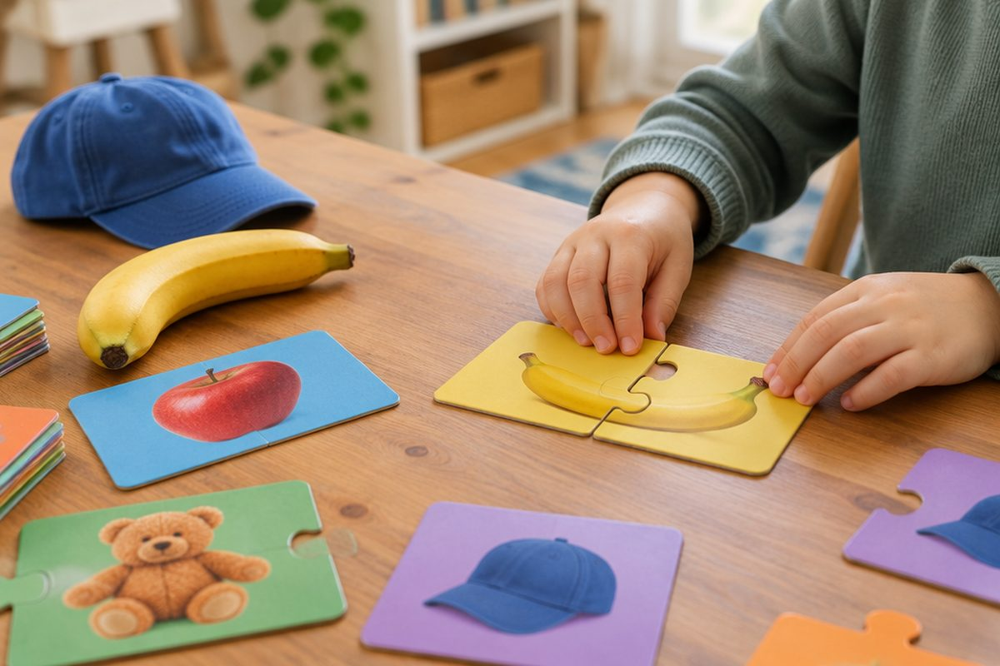

전체 단원 › 1~2학년 › 국어 › 1단계 · 자음과 모음으로 글자 만들기
자음과 모음은 어디에 붙을까?

자음 14개, 모음 10개를 모두 배웠어요. 이제 퍼즐처럼 맞춰서 어떤 글자든 만들어 봐요!
자음 + 모음 = 글자
글자는 자음과 모음이 만나 생겨요.
자음은 앞에, 모음은 뒤에 읽어요.
ㄱ ㄴ ㄷ ㄹ ㅁ ㅂ ㅅ ㅇ ㅈ ㅊ ㅋ ㅌ ㅍ ㅎ + ㅏ ㅑ ㅓ ㅕ ㅗ ㅛ ㅜ ㅠ ㅡ ㅣ
서 있는 모음은 오른쪽에
ㅏ ㅑ ㅓ ㅕ ㅣ는 서 있어요.
그래서 자음의 오른쪽에 써요.
가 갸 거 겨 기
누워 있는 모음은 아래에
ㅗ ㅛ ㅜ ㅠ ㅡ는 누워 있어요.
그래서 자음의 아래에 써요.
고 교 구 규 그
글자를 모아 낱말
글자를 이어 붙이면 낱말이 돼요.
가나다라 노래로 글자를 익혀요.
바+나+나 = 바나나 · 모+자 = 모자 · 너+구+리 = 너구리
핵심 낱말
- 글자
- 자음과 모음이 만나 소리 나는 한 덩어리예요.
- 오른쪽 모음
- ㅏ ㅑ ㅓ ㅕ ㅣ. 자음 오른쪽에 써요.
- 아래쪽 모음
- ㅗ ㅛ ㅜ ㅠ ㅡ. 자음 아래에 써요.
- 낱말
- 뜻이 있는 말이에요. 글자가 모여 만들어져요.
꼭 알아야 할 표현
| 가 나 다 라 마 바 사 아 자 차 카 타 파 하 | 자음 14개에 ㅏ를 붙인 노래 | |
| 가 갸 거 겨 고 교 구 규 그 기 | ㄱ에 모음 10개를 붙인 글자 | |
| 노 | ㄴ + ㅗ | |
| 수 | ㅅ + ㅜ | |
| 바나나 | 🍌 길쭉한 노란 과일 | |
| 모자 | 🧢 머리에 쓰는 것 | |
| 너구리 | 🦝 눈가가 까만 동물 | |
| 마이크 | 🎤 노래할 때 쓰는 것 | |
| 주스 | 🧃 과일을 짜서 만든 음료 | |
| 고구마 | 🍠 땅속에서 자라는 먹을거리 |
한 줄 정리
- 자음과 모음이 만나 글자가 돼요.
- ㅏ ㅑ ㅓ ㅕ ㅣ는 자음 오른쪽, ㅗ ㅛ ㅜ ㅠ ㅡ는 자음 아래에 써요.
- 글자를 이어 붙이면 낱말이 돼요.
학교 교육과정 연결
- [2국04-01] 한글 자모의 이름과 소릿값을 알고 정확하게 발음하고 쓴다.
- [2국03-01] 글자와 단어를 바르게 쓴다.